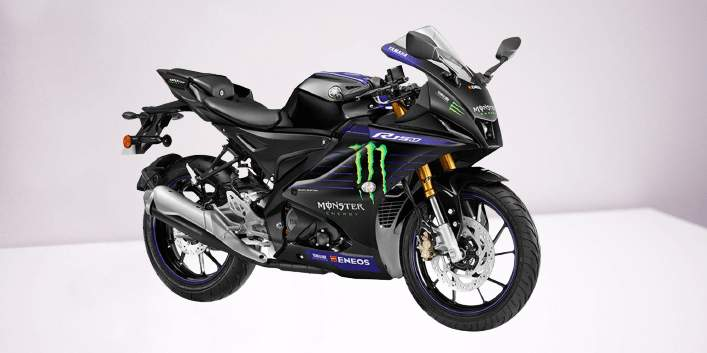
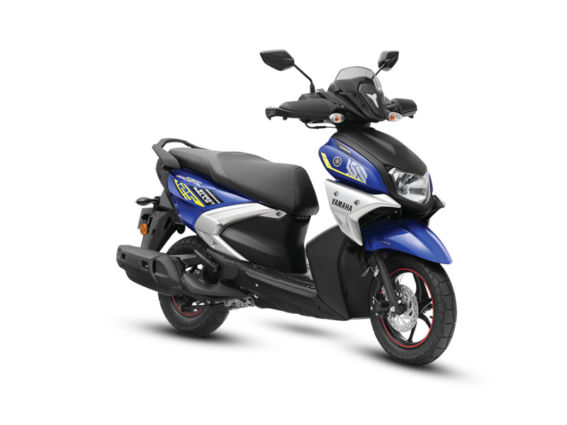

ACI Motors was launched in 2007, to propagate a systemic change in the agricultural sector through increased mechanization of the agricultural process. To fulfill this vision, ACI Motors is striving to provide “Complete Farm Mechanization Solution” to farmers by offering a wide range of agriculture machineries - Tractor, Power tiller, Reaper, Mini Combine Harvester, Rice Transplanter etc. covering the full cycle from land preparation and cultivation to crop preservation. ACI Motors entered the Construction Equipment Industry of Bangladesh in 2014 introducing CASE Construction Equipment. ACI Motors also became the distributor of world famous YAMAHA Motorcycles in Bangladesh in 2016.
Yamaha has grown into the world's largest manufacturer of musical instruments (including pianos, "silent" pianos, drums, guitars, brass instruments, woodwinds, violins, violas, cellos, and vibraphones), and a leading manufacturer of semiconductors, audio/visual, computer related products, sporting goods
